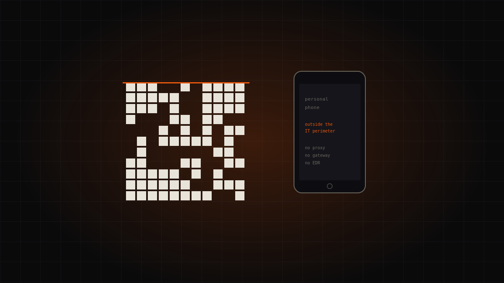

Topic · People
Cyber culture
Technology alone isn't enough: security is also about people and habits.

Dossiers in this section
1 dossiersThe topic in brief
The human link isn't the weakest by accident
Social engineering remains among the prime threats because it bypasses technical controls by targeting people. But “the user is the problem” is a wrong shortcut: people fail when processes set them up to fail. Cyber culture isn't about blame, it's about giving the tools and habits that make the safe choice also the easy one.
Cyber hygiene, concretely
A few practices, repeated: long unique passwords managed by a password manager, multi-factor authentication, wariness of unexpected links and attachments, updates installed. ENISA and CISA's Secure Our World campaign promote exactly these basics, and every October European Cybersecurity Month renews them.
Training that changes behaviour
Useful awareness isn't an annual course forgotten the next day: it's recurring practice, phishing simulations built to teach (not to punish), clear and short messages. An organisation that talks about security in an understandable way gets more protection than one that buys yet another tool.
FAQ
- What is cyber hygiene?
- The set of basic habits — strong passwords, MFA, updates, caution with links — that drastically reduce everyday risk.
- Does training really help?
- Yes, if it's recurring and practical. Phishing simulations designed to teach, not punish, change behaviour over time.